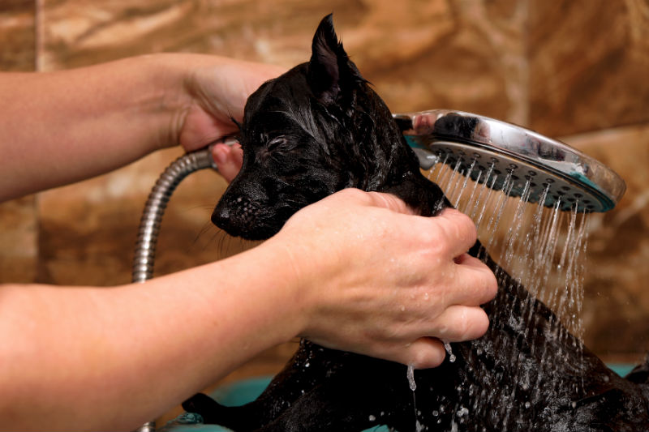

Você sabe como dar banho em cachorro? Aprenda já!
A higienização periódica é muito importante na vida dos pets. Só a partir dela, os peludos têm bem-estar. Entretanto, você ainda pode ter algumas dúvidas sobre como dar banho em cachorro. O tipo de shampoo, o melhor processo e as técnicas a serem utilizadas são alguns cuidados que devem ser levados em conta.
Além disso, muitos tutores precisam lidar com pets agitados e que não gostam nem um pouco de água. Isso pode acarretar animais estressados ou até machucados ao final do processo. Por isso, é importante saber como dar banho em cachorro para proporcionar mais conforto ao bichinho.
Pensando nisso, preparamos este artigo com algumas dicas úteis para deixar seu amigo de quatro patas cheiroso. Assim, as chances de ter problemas na hora da higienização do pet são menores. Descubra como dar banho em cachorro a seguir!
Passo a passo
Prepare-se reunindo todos os itens que você precisa, como shampoo, condicionador, toalha, escova, entre outros. Também é importante se certificar que o animal está calmo, para facilitar o processo. Caso ele esteja muito agitado, você pode tentar cansá-lo com brincadeiras e carinhos. depois de garantir que os artigos para banho em cachorro estão separados e o peludo está calmo, é a hora de colocar a mão na massa, ou melhor, nos pelos! Confira o passo a passo para a limpeza eficiente do seu amigão.
Escove os pelos
Esta dica é importante, principalmente, para pets com pelagem comprida. Escovar os pelos de cachorro evita que os fios se embaracem ao serem lavados, além de eliminar a pele morta. Para isso, é importante ter uma escova adequada para o tipo de pelagem do seu animalzinho de estimação.
Cuide dos ouvidos
Os ouvidos dos cães são muito delicados. Por isso, é preciso dedicar atenção especial a eles na hora do banho. Assim, limpe a parte externa com água morna, utilizando gazes ou toalhas. Procure pedaços de algodão para tampá-los e evitar que a água caia nas cavidades durante o banho.
Umedeça os pelos
O segundo passo é prender o bichinho de forma segura e confortável. Em seguida, umedeça os pelos dele com água morna. Molhe o bichinho aos poucos para ele se acostumar com a sensação da água e se sentir mais à vontade. Se o pet ficar muito agitado durante o processo, ofereça petiscos e faça carinho.
Passe o shampoo
Na hora de aplicar o shampoo para cachorro, leve em conta o tamanho e o tipo de pelo do animal para acertar na quantidade adequada. Aplique o produto suavemente, fazendo massagem ao longo do corpo do pet e esfregando as raízes dos pelos. Deixe o produto agir por alguns minutos antes de enxaguar.